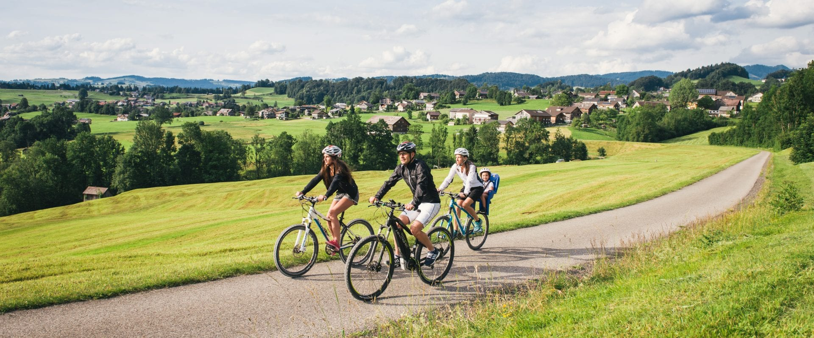

I-Bike - The bicycle revolution
Mehr als nur ein Fahrrad

I-Bike ist mehr als nur ein Fahrrad. Es ist die Zukunft!
Uns ist es gelungen ein autonomfahrendes Fahrrad zu entwickeln! Dieses bringt Sie sicher ans Ziel!
Natürlich ist es an alle Gesetzeslagen angepasst!
Wir haben Sie überzeugt? Dann kaufen Sie doch direkt das I-Bike in unserem Shop
Was steckt im I-Bike?
Im I-Bike steckt die neuste und modernste Technik in einer hohen Quallität! Mit unsere Karte bieten wir unserer Konkurrenz die Stirn!
Wir haben Sie überzeugt? Dann kaufen Sie doch direkt das I-Bike in unserem Shop